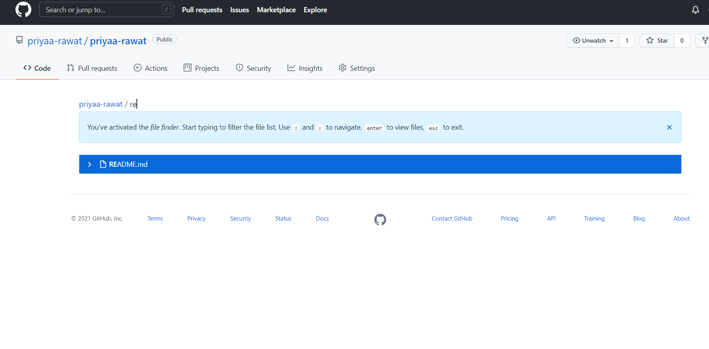
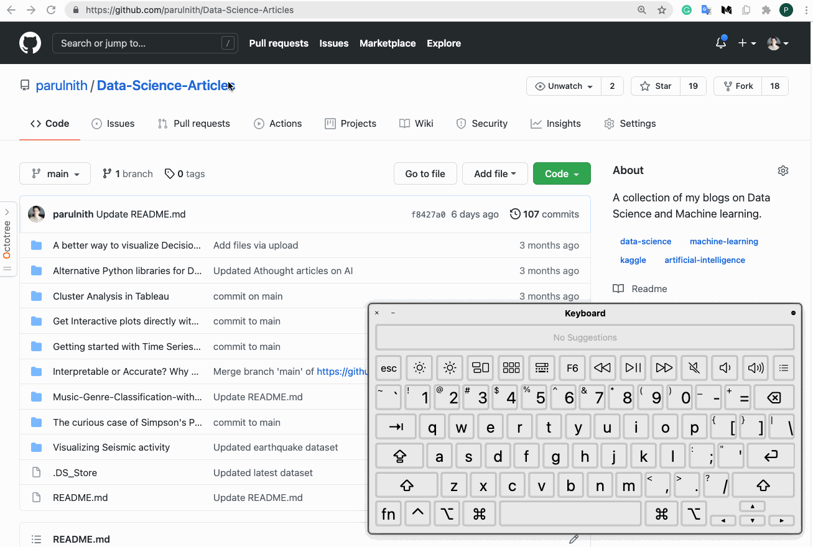

Github Tricks:
Here are some tips and tricks to ease in your way to github tasks
1. Fuzzy file finder : Press in any repository to access it and type the name of the file you want.
2. Keyboard Shortcuts:
Press on any github page and get a list of shortcuts to apply on the page.
3. You can share links for particular code snippets by selecting a single line or multiple lines using shift and the url above is the link to share.
By adding the code link in a comment a visualisation of the snippet appears.
4. Compare your code changes with the help of blame feature in the code view.
5. Github provides a web based code editor to save you the time to clone to the local environment and directly create and commit code changes from your repo. This can be done in two ways:
- Change the url from github.com to github.dev
- Press "dot" key on the repository you want to edit the code file of.

6. Octotree browser extension helps you navigate directories and open files in the familiar tree fashion of a code editor.